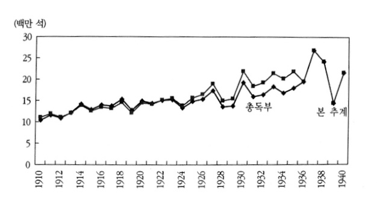
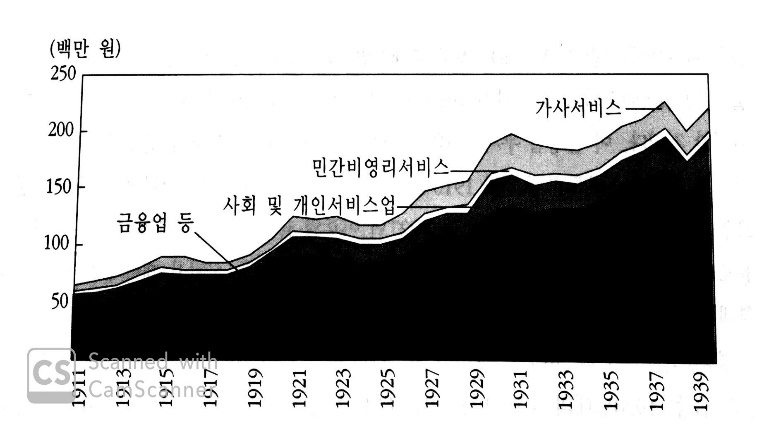
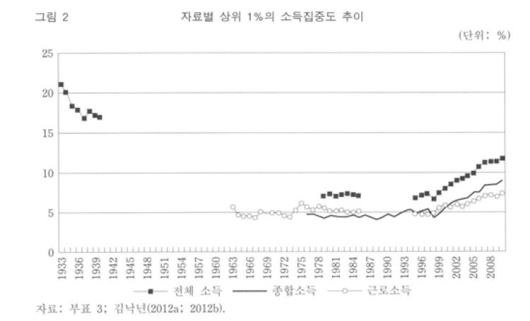
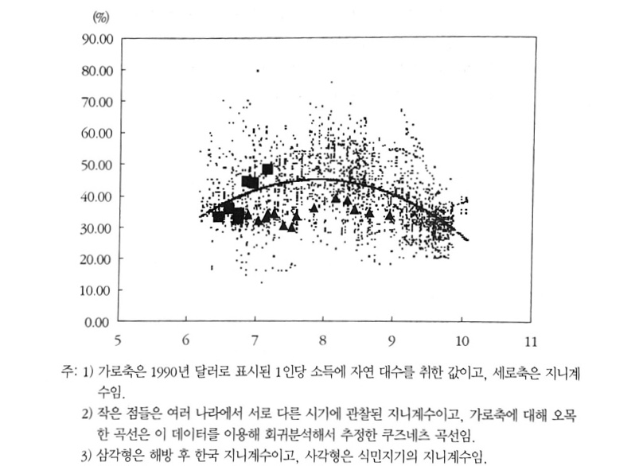
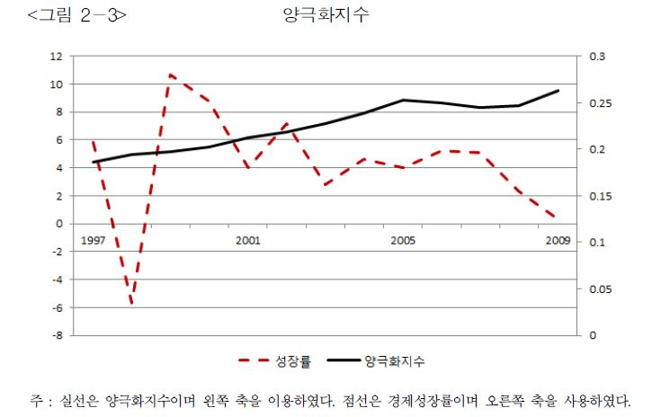

일제강점기를 보는 두 경제학
-불평등인가, 성장인가-
우리의 역사, 어떠하였는가
1945년 8월, 일제로부터의 광복 이후 대한민국의 과거를 재정리하려는 시도는 끊임없이 지속되어 왔다. 다소의 차이가 있을 수 있으나, 해방 직후, 역사 교육과 체계를 다시 세우며 민족주의적, 그리고 현실주의적 역사 인식이 주를 차지하게 되었다. 이에 따라 자연스레 식민 사관에 대비되는 이론들이 중심을 차지하였다. 특히 여러 방법론 중에서도 해방 직후로부터 근래까지, 일제 강점기 당시 왜곡된 역사 서술이나 자료들을 제대로 다시 연구하려는 노력이 주를 이루었다. 하지만 최근 들어 민족주의적 역사 서술이나 그 의식에 다소 주관적이고 편파적인 부분이 있다는 의견이 지속해서 제기되어 왔다. 따라서 이전과 달리 지금까지의 한국사 연구에 대한 비판이 훨씬 자유롭게 이루어지고 있다.
일제 강점기에 관한 문제들을 세부적으로 들어가면 여러 가지 쟁점들이 부딪히고 있는 모습을 볼 수 있다. 하지만 결국 한 가지로 이들을 모아 본다면 ‘식민 통치의 정당성’에 관한 논쟁으로 귀결시킬 수 있다는 것에 많은 사람이 동의할 것이다. 그리고 이 정당성을 긍정, 혹은 부정하기 위한 가장 큰 근거 중 하나가 바로 1910년부터 1945년까지 한반도의 경제적 상황이다. 만약 이 시기의 경제 구조 등을 적절히 파악할 수 있다면, 일정 부분에서는 일제 강점기에 대한 판단 근거가 될 수도 있을 것이다. 실제로 식민지 근대화론자들이 내세우는 다수의 통계 자료들이 대부분 이 시기의 경제 성장에 연관되어 있다. 근대화라는 것은 산업 구조의 변화와 경제 지표의 성장, 그리고 이에 따른 생활 수준의 향상 등을 의미하는데, 식민지 근대화론자들의 통계에 따르면 일제 강점기에 그러한 지표의 향상이 뚜렷하게 보인다는 것이다. 다시 말해, 식민 통치가 조선의 근대화에 기여했다는 것이다.1
하지만, 과연 이러한 근거 제시가 올바른 것일까? 경제학을 공부하게 되면 단순한 물가 통계나 생산량 통계를 비교하는 것이 경제 수준을 비교하는 가장 빠르고 쉬운 방법이기는 하지만, 모든 것을 알려주지는 못한다는 점 역시 알 수 있다. 단순히 경제의 성장만을 알아내는 데 집중하다 보면 그 안의 사람들 사이에서 존재하는 지나친 불평등을 간과할 수 있으며, 반대로 공정성에만 집중하면 그 경제의 성장과 발전을 놓칠 수도 있는 것이다. 그렇다면 우리는 어떤 경제 지표 자료로 이 시대의 수준과 생활상을 파악해 낼 수 있으며, 아울러 식민지 근대화론과 내재적 발전론을 비교 분석할 수 있을까? 식민지 근대화론이 제시하는 성장이라는 관점과 식민지 수탈론에서 주장하는 불평등, 두 가지 관점에 대해 먼저 알아보고, 우리가 이 관점들을 어떻게 받아들여야 할지에 대해 생각해 보려고 한다.
식민지 근대화론/수혜론이란 무엇인가?
앞서 언급한 식민지 근대화론을 간단히 정리하자면, 일제의 식민 통치가 조선이 근대적인 문물을 받아들이는 데 일조하였고, 나아가 광복 이후 한국의 경제 발전에 이바지하였다는 논지이다. 한마디로 조선은 주저앉고 있었고, 식민 지배를 받으며 단독으로 이루어내지 못했을 근대화를 이룰 수 있었다는 것이다. 이 논지를 주장하는 주류 학자로는 현재 이영훈 교수 등이 있다. 이영훈 교수는 2017년 정년 퇴임을 맞아 월간조선과의 인터뷰에서 자신의 일부 발언이 ‘식민지 근대화론’이라는 소리를 듣는다는 기자의 질문에 다음과 같은 답변을 한 바 있다.
“부족주의적 배타성에서 하는 소리입니다. 일제시대에 근대화가 된 게 아니라면 우리가 언제부터 근대화되었나요? 일제시대에 진행된 근대화가 왜곡된 근대화라면 진정한 근대화는 언제부터 진행된 것이죠?”2
물론 식민지 근대화론자들은 스스로 일제강점기를 옹호하는 것이 아니며, 수탈 여부와 무관하게 제국주의는 비판의 대상이라는 주장을 하곤 한다. 일제에 의해 근대화는 되었을지 모르나 그 수혜성의 여부는 별도라는 것이다. 그러나 식민지 근대화론의 주된 주장과 논거가 뉴라이트 등이 주장하는 ‘식민지 수혜론’의 근거가 된다는 점, 이영훈 교수 등이 주장한 수많은 친일 발언 등으로 보아 이들의 주장은 신빙성이 떨어져 보인다. 그렇다면 식민지 근대화론자들은 어떠한 통계를 근거로 식민 통치가 조선의 근대화에 도움이 되었다고 말하고 있을까?
여러 가지 근거가 있지만, 가장 대표적으로 이들이 사용하고 있는 통계를 들자면 19세기 말의 조선의 경제 상황을 나타내는 통계가 있다. 말하자면 19세기 말, 일제가 침투하기 직전 조선의 경제 상황은 파탄 직전이었고, 일제가 진행했던 토지조사사업 등 다양한 정책들이 이러한 파탄 직전의 조선 경제를 살려냈다는 것이다. 실제로 당시 가장 중요했던 생산품인 미곡의 생산량을 나타낸 [그래프 1]을 보자, 1910년대 1천여 만 석에 불과했던 미곡 생산량은 1940년대를 전후로 하여 2천여 만 석으로 두 배 가까이 증가하였다.3 널리 알려져 있듯이 일제강점기에 조선의 쌀 생산량을 늘리기 위해 산미증식계획부터 시작하여 여러 가지 회사가 설립되고 행정 계획이 수립되었다. 그 과정에서 신품종 개량과 비료 투입의 증진 등 목적을 이루기 위해 이전에 저조했던 다양한 방법들이 도입되었으며, 경지 면적 역시 크게 늘어났다. 그 실질적인 목적이 수탈이라는 주장을 차치하고서라도 통계치로 보았을 때 당대의 주식이었던 곡물 생산량에 있어 이러한 계획들이 상당한 진전을 보였던 것은 사실이다.
단지 미곡 생산량뿐만이 아니다. 조선대에는 1896년에 들어서야 비로소 조선은행이 최초의 근대적인 은행으로 설립되는 등 근대 금융업이라고 볼 만한 것이 미약했다. 그러나 1910년 이래 금융, 보험 및 사업서비스업의 부가가치 생산 추이는 1935년의 물가를 기준으로 하여 생각해 보았을 때 4배 가까이 뛰었다는 통계 역시 [그래프 2]처럼 존재한다.4 통계로 비추어 보았을 때 조선시대에는 상상하기 어려웠던 서비스업, 금융업 등이 일제 강점기에 폭증하였고, 이는 곧 근대적인 경제 사회 구조가 일제강점기를 통해 확립되었다고 해석할 수도 있는 부분이다.
결정적으로, 이러한 논리 전개를 위해 우리가 오늘날에도 흔히 경제적인 수준을 파악하기 위해 사용하는 국민총생산(GDP)에 관한 자료도 근거로 삼아지고 있다. 낙성대연구소의 통계 자료에 따르면, 2010년 물가로 기준을 고정한 인구 1인당 명목 GDP 또한 1911년 153.8만 원에서 1943년 192.6만 원으로 상승하였으며,5 주장에 따르면 이러한 국민소득의 증가 역시 식민개발 당시의 성장을 반증하는 것이라고 한다. 예시로 든 통계자료들에서 유추할 수 있듯이, 식민지 근대화론을 주장하는 학자들이 근거로 드는 통계는 주로 경제 규모의 성장 및 산업의 근대화에 관한 자료가 많은 경향성이 있다. 그렇다면 이러한 통계들대로, 정말 식민 지배 기간 동안 조선의 산업은 성장했으며, 우리 이전 한반도의 민중들은 앞으로 생활이 더 나아질 것이라는 청사진을 안고 36년에 달하는 시간을 살아나가고 있었을까? 그렇지 않다면, 식민지 근대화론에 대한 반박으로 우리는 어떤 경제적 통계들을 제시할 수 있을까?
성장과 분배, 식민지 근대화론에 대한 반박
오늘날에도 지속해서 제기되는 문제이지만, 여러 가지 경제 지표로 미루어 보아 경제의 규모가 성장하고 있다고 하여 그 사회가 살기 좋은 사회라는 것을 반드시 의미하지는 않는다. 역사를 뒤돌아보았을 때, 세대를 뛰어넘어, 경제적 불평등이라는 요소는 항상 그 시대의 사회상을 분석하는 데 있어 중요한 역할을 해 왔다. 그리고 이는 우리가 현재 바라보고 있는 일제강점기에도 비슷하게 적용된다.
식민지 근대화론의 반대편에는 내재적 발전론 등 여러 관점의 학설들이 포진해 있다. 이들의 결정적인 주장은 다소 상이할 수 있으나, 하나같이 포함하고 있는 논거 중 하나는 일제의 여러 경제 및 행정 계획은 궁극적으로 조선에 거주하는 일본인을 위한 것이었거나, 혹은 일본 본토의 윤택한 삶을 위한 것이었다는 점이다. 만약 이 주장대로 식민지 조선에 거주하는 조선인들이 불평등한 소득으로 인해 고통받았다면, 성장을 논거로 삼는 식민지 근대화론자들의 주장은 한층 약화될 것이다. 실제로 이러한 점들을 논증하기 위해 많은 연구가 있었고, 이를 통해 여러 통계자료 역시 지속해서 제시되어 왔다.
여러 가지 자료 중 가장 눈에 띄었던 통계는 식민지기 소득분포의 불평등에 관한 것이었다. 최근에야 소득분포에 대한 통계를 통계청 등에서 쉽게 얻을 수 있을지 모르겠으나, 지금처럼 통계에 대한 인식이 발달하지 않았던 과거의 자료는 얻기 힘든 것이 사실이다. 김낙년 교수는 1934년에 현재의 종합소득세에 해당하는 제3종 소득세가 도입되었다는 점에 착안해, 이후 10년간의 소득세 통계를 얻어 이 시기의 소득집중도를 추계하였다.6 주어진 [그래프 3]7을 참조해 보면, 1933년부터 1943년까지 상위 1%에 해당하는 사람들의 소득집중도가 해방 후보다 월등히 높았다는 점을 확인할 수 있다. 여기서 문제는 고소득자 중 일본인의 비중이 절대다수였다는 점이다. 여기에 1940년 기준으로 전체 인구의 2.9%에 불과한 일본인이 전체 경지의 9.5% 정도를 차지하고 있었으며, 1930년대 주식회사 자본금의 90% 정도는 일본인이 투자하고 있었다는 허수열 교수의 통계치를 참조해 보자.8 경지의 9.5%라고 하면 그리 많아 보이지 않을 수도 있다. 하지만 밭이 아닌 논만을 따지게 되면 조선 전체 논의 18.3%가량이 일본인 소유였으며, 토지의 비옥도까지 고려했을 때 일본인 소유 논의 비중은 1941년 기준 54%(경성상공회의소 추계)였다고 한다.9 조선 내 쌀 생산량의 절반이 넘는 부분을 책임지는 논들이 3%도 되지 않는 일본인들의 소유였다는 것이다. 아쉽게도 식민지기 총독부가 내놓은 소득세 통계에는 민족 간 구분이 없어 조선인 대 일본인의 정확한 소득 분포를 알기는 어렵다. 하지만 이러한 통계치를 보면 최상위 소득자로 갈수록 일본인의 비중이 압도적으로 높다는 사실을 어렵지 않게 추론할 수 있다. 한마디로, 일제강점기 내 대부분의 부는 일본인에게 쏠려 있었다고 볼 수 있는 것이다.
또 다른 통계를 보자. 한 국가의 경제적 성장과 개인 소득의 변화에 교육, 그리고 교육에서 형성되는 인적 자본의 성장이 미치는 영향은 지대하다. 1992년 노벨경제학상을 받은 미국 경제학자 게리 베커는 1964년에 출간한 『인적 자본』에서 “교육이나 훈련에 대한 개인의 투자는 기계나 공장 등에 대한 기업의 투자와 동일하다”라고 역설하였다. 실제로 1944년 한반도 내 4년제 대학 졸업자의 비중은 전체 인구수 대비 0.03%에 불과하였으며, 전문학교 졸업자의 비중은 0.1%에 불과하였다.10 동시대 일본인 4년제 대학 졸업자의 비율이 1.17%로 대졸자 인구수의 차이가 여실히 드러나고 있으며, 불취학자의 경우 일본인은 25.62%, 조선인은 86.18%로 극심한 차이를 보인다.11 일본에는 지역별로 제국대학과 전문학교들이 다수 세워졌던 것에 비하면 한반도의 경우 대학교는 경성제국대학이 유일했다. 일본은 조선 내 경성제국대학을 제외한 다른 정식 대학교 설립 허가를 전혀 내어 주지 않았고, 그렇기에 연희전문학교 등 다수의 전문학교가 4년제 정식 대학교와 같은 형태의 학과를 가지고 있었음에도 불구하고 전문학교 인가에 만족해야 했다. 그마저도 그 수는 매우 소수였다. 한마디로 일제는 조선인들이 인적 자본을 쌓을 기회를 대학 인가의 제한을 통해 완전히 틀어막아 버린 것이다. 1944년의 통계 자료만 보았을 때 저 정도의 수치를 지녔을진대, 경성제국대학과 각종 전문대학이 설립되기 이전이었던 1910년대는 더 말할 것도 없을 것이다. 통계치에서 보이는 인적 자본의 부족은 해방 직후까지 이어졌고, 추론컨대 이후 교육의 팽창으로 적절한 양의 인적 자본을 공급할 수 있게 되기 이전까지 악영향을 끼쳤을 것이다. 이러한 통계 자료들은 식민지 조선에 대해 일제가 우민화 정책을 펼쳤다고 주장하는 근거로 등장하곤 한다.
이처럼 일제의 식민 통치가 조선에 악영향을 끼쳤다는 주장에서 제시하는 통계들은 일제가 조선에서 진행한 산업화, 근대화 등은 허울뿐이라는 점을 지적하는 것이 많았다. 소득의 불평등과 같은 자료로 볼 때 결국 이러한 경제 성장의 과실은 조선에 거주하는 일본인, 혹은 일제의 식민 통치에 협력하는 일부 조선인들에게 돌아갔으며, 대부분을 차지하는 일반 조선 농민 등은 일한 만큼 받아가지도 못했고, 애초에 일제가 진행한 여러 행정 정책이나 산업 등은 궁극적으로 조선을 위한 행동이 아니었다는 것이다.
이처럼 우리는 식민지 근대화론과 이에 반대하는 의견에서 주로 제시하는 성장/분배와 관련한 통계 자료들을 찾아 살펴보았다. 그렇다면 우리는 이 둘 중 어떤 논지가 더 타당하다고 보아야 하는가? 과연 우리는 이러한 통계치들을 어떤 관점에서 받아들여야 할까?
세대를 이어 가는 논쟁, 과연 어떤 것이 옳은가?
두 논쟁은 아직 끝나지 않았으며, 최근에도 지속적으로 서로에 대한 반박과 재반박이 이루어지며 활발한 논의가 지속되고 있다. 실제로 식민지 근대화론 쪽에서 미곡 생산량을 조사하는 데 사용했던 고정효과모형12은 샘플 농가가 매 기 달라지기 때문에 부적절한 조사 방법이며, 합동 OLS모형13이 적합하다는 반론이 제기된 바 있다.14 이와 반대로 식민지기에 소득분배가 불평등해졌지만 그렇게까지 극단적인 불평등화가 지속되지 않았다는 반론 역시 존재한다. 소득분배의 불평등은 근대적 경제성장의 초기 단계에서 필연적으로 겪는 현상이라는 것이다. 실제로 [그래프 4]를 보면, 당시의 다른 국가에서 구한 지니계수들의 분포와 일제강점기 한반도의 지니계수 차이를 볼 때, 제시했던 것과 같은 극단적인 소득 불균형은 발생하지 않았다는 반론도 있다.15 이러한 반박에 또 다른 반론이 제시되는 것을 보면, 모두가 합의할 수 있는 통계치를 찾기는 요원한 것 같다. 여기서는 어느 쪽의 통계가 맞는지를 평가하지는 않으려고 한다. 다만 둘의 입장을 인정하되, 어느 쪽을 더 우선시해서 보아야 할지에 집중해 보려 한다.
사실 앞에서 언급한 두 경제적인 차이는, 오늘날에도 분배와 성장의 관점에서 수많은 정치적인 다툼이 존재하는 만큼 바라보는 관점에 따라 다양한 의견이 있을 수 있다. 성장을 통해 파이를 늘리는 것이 우선시되며, 당시는 다른 많은 국가들이 일정 정도 이상의 소득 불균형에 시달렸다는 점을 인정해야 한다고 생각하는 사람들은 식민지 근대화론을 긍정할 가능성이 높다. 그와 다르게 일제강점기의 소득 불균형은 이해하기 어려울 정도로 과도했으며, 이는 해방 이후의 한국 사회에 부정적인 역할을 끼쳤다고 여기는 사람들은 전자를 부정할 것이다.
다만 여러 가지 연구를 통하여 볼 때 일제강점기 때의 경제 성장이 사실이라고 하더라도, 지속된 소득불평등과 사회적 구조 모순의 심화는 이후 조선의 경제 상황을 악화시켰을 가능성이 높다고 생각된다. 전쟁이라는 상황과 이후 일제의 패망으로 중일전쟁이 발발한 1940년부터 해방 직후까지의 경우는 정확한 한반도의 경제 상황을 알기가 쉽지 않다. 그러나 같은 시기 전국민의 보편적인 복지와 생활 수준 향상에 신경 쓴 다른 국가들과는 달리,16 일제의 경우 일본인을 1등신민, 조선인을 2등신민으로 구분하는 등 지속해서 조선인들에 대한 차별에 초점을 맞추었다. 만약 이러한 정책이 지속해서 시행되었을 경우 경제 성장과는 별개로 일본인과 조선인의 경제적 불평등은 심화되었을 가능성이 아주 높아 보인다. 지속적인 소득의 불평등은 경제 성장의 둔화, 혹은 하락을 낳는다. 근래 한국의 자료를 이용한 통계치인 [그래프5]를 참조하면 소득불평등의 수준이 양극화를 기준으로 측정될 때, 소득의 불평등은 경제 성장의 둔화와 밀접한 관계를 가지게 된다는 사실을 추론할 수 있다.17 단순히 경제적인 인센티브만 생각할 경우 소득의 불평등이 더 나은 소득을 얻기 위한 노력의 유인이 되어 경제성장에 정의 효과를 가지는 것을 기대할 수 있을 수도 있다. 하지만 최근의 연구에 따르면 소득불평등의 고착화는 저소득층에게 정상적인 경제활동의 유인보다 정치적, 불법적인 행위의 유인이 된다고 한다.18 또한 사회적, 정치적 불안정성의 증가가 경제성장에 대한 소득불평등의 부정적인 영향을 강화한다는 연구 결과도 있다.19 당대 일본이 추구한 군국주의 및 팽창정책은 국제적으로 불안정한 정세를 만들었고, 이러한 상황은 앞서 말한 소득불평등의 효과를 심화시켰을 가능성도 충분히 존재한다.
다시 말하자면 경제 성장의 유무, 혹은 그 수준과 별개로, 당대에 지속적으로 이루어진 차별 정책과 소득의 불평등은 지속되었다. 그리고 이러한 과정에서 쌓아 온 것이 설령 조선의 근대화가 맞다고 해도, 이러한 것이 조선에 도움을 주었는지는 미지수이다. 점점 고착화되는 소득의 양극화와 조선인들에 대한 차별은 설사 경제 성장이 있었다고 해도 이 효과를 부정적으로 상쇄했을 것이며, 사회 구조의 모순은 이미 심각하였고, 더 심각해졌을 것이다. 실제로 해방 이후 잔존하던 경제적인 양극화와 사회 구조의 모순은 한국 사회를 한동안 괴롭혔다. 추가적으로 그나마 긍정적인 부분이라고 식민지 근대화론자들이 주장하는 경제 성장이나 근대적인 산업 도입 등도 1940년 이래 일본이 벌인 태평양전쟁으로 해방 즈음에는 거의 파탄 지경에 이르렀다. 이때의 사회적 혼란으로 믿을 수 있는 통계 자료를 찾기 힘들지만, 해방 직후 한국이 전 세계 최빈국 중 하나였다는 사실은 이를 증명하는 사실 중 하나이다. 식민지기 이루어졌다고 하는 경제 성장과 산업 구조 개편 등이 결국은 해방 직후 거의 남아 있지 않다는 점에서, 식민지 근대화론이 과연 믿을 만한 논지라고 볼 수 있을지 의문이다. 덧붙여 다른 기준을 차치하고 사회적 불평등만을 기점으로 보아도, 식민지 근대화론이 말하는 ‘성장’이라는 것이 지속 불가능하다는 사실은 명백해 보인다. 설사 우리가 알고 있는 시기에 해방이 불가능했다고 하더라도, 양극화되는 조선의 경제 수준과 사회 모순은 식민 통치를 언젠가 붕괴시키지 않았을까?
시대를 보는 경제사학적 단상 – 맺음말
지금까지 식민지 근대화론과 이에 반대하는 여러 가지 경제 통계를 통하여 일본의 식민 통치 기간 동안 경제 구조의 모습을 파악해 보았다. 특히 그 중에서도 불평등에 초점을 맞추어 식민지 근대화론에서 주장하는 성장이라는 주제의 불안정성을 제시하였다. 하지만 이 시기의 경제 상황에 대해서 끊임없는 논쟁은 아직도 뜨겁다. 여기서 우리는 다양한 정보를 접하고, 제대로 된 지식과 관점을 갖추어야 할 것이다. 일부 통계에 매몰되어 식민지 수혜론을 옹호하는 것은 매우 큰 잘못이나, 반대로 민족적인 감정에 휩쓸려 일부 사실을 직시하지 못하는 것 역시 과오이다. 하나의 관점에만 집중하게 되어 왜곡된 역사관이 생기는 것이다. 일제강점기는 당시 조선, 그리고 현재의 대한민국에도 진실로 불행한 과거였다. 우리는 이 과거를 반복하지 않기 위해서라도 많이, 제대로 알고 우리 앞에 주어진 과제들을 잘 풀어나가야 할 것이다.
그리고 우리가 지금까지 경제 통계를 통해 일제강점기를 보았지만, 경제사적인 측면은 역사 연구의 한 갈래일 뿐임을 잊어서는 안 된다. 경제뿐만 아니라 사회, 정치 등 역사를 바라보는 관점은 굉장히 다양하다. 그리고 이 안에서도 자신의 생각에 따라 세부적인 의견이 충분히 달라질 수 있다. 일제강점기뿐만 아니라 한반도의 유구한 역사를 지켜보면, 지속적이고 꾸준한 연구가 있었음에도 불구하고 현재 해결하지 못한 의문점이나, 치열하게 논쟁이 벌어지는 세부적인 쟁점이 상당히 많다. 결론이 나지 않은 문제들이 아직까지도 많이 남아 있는 셈이다. 이러한 상황에서, 우리가 가져야 할 자세는 하나에 대한 무조건적인 믿음이 아니라, 다양한 관점에 대한 포용과 수용의 자세가 아닐까.
참고자료
배진영, 「정년퇴임한 경제사학자 이영훈 서울대 교수,”자본주의 맹아론은 대한민국 부정으로 이어지는 주장”」, 월간조선, 4월호, 2017
김낙년 편, 『한국의 경제성장 1910~1945』, 서울대학교 출판부, 2006
「GDP, 인구, 1인당 GDP(남한과 북한, 2010년 가격), 1911-2015」,낙성대경제연구소, 2012
김낙년, 「식민지기 조선의 소득불평등」, 경제사학, 55, 경제사학회, 2013
허수열, 『개발 없는 개발』, 은행나무, 2005
허수열, 「안병직 교수 제자의 ‘식민지 근대화론’ 비판」, 신동아, 2월호, 2007
박한나, 송재민, 「자연재해가 지역경제에 미치는 영향」, 국토계획, 51, 대한국토·도시계획학회, 2016, 198p
우대형, 「미곡생산성의 장기 추이에 관한 재검토 1660-1938」, 연세대경제연구소 발표문, 연세대경제연구소, 2017
신관호, 신동균, 「한국경제분석 : 소득불평등이 경제성장에 미치는 효과」, 한국경제의 분석, 20(1),한국금융연구원(2014)
백경호, 「소득불평등과 경제성장에 관한 세 연구」, 전남대학교 박사학위논문, 2016
다만 학자마다 내세우는 근대화의 정의에 차이가 있고, 이러한 해석의 차이 때문에 식민지 근대화론이 식민지 수혜론 등 일제를 옹호하는 가설로 이어지는 경향성이 있다.↩︎
배진영, 「정년퇴임한 경제사학자 이영훈 서울대 교수,”자본주의 맹아론은 대한민국 부정으로 이어지는 주장”」, 월간조선, 4월호, 2017↩︎
김낙년 편, 『한국의 경제성장 1910~1945』, 서울대학교 출판부, 2006, 34p↩︎
김낙년 편, 위의 책, 서울대학교 출판부, 2006, 166p↩︎
「GDP, 인구, 1인당 GDP(남한과 북한, 2010년 가격), 1911-2015」,낙성대경제연구소, 2012↩︎
김낙년, 「식민지기 조선의 소득불평등」, 경제사학, 55, 경제사학회, 2013, 251p↩︎
김낙년, 위의 글, 262p↩︎
허수열, 『개발 없는 개발』, 은행나무, 2005, 343p↩︎
허수열, 『개발 없는 개발』, 은행나무, 2005, 335p↩︎
허수열, 「안병직 교수 제자의 ‘식민지 근대화론’ 비판」, 신동아, 2월호, 2007↩︎
허수열, 『개발 없는 개발』, 은행나무, 2005, 246p↩︎
↩︎상수항이 패널 개체별로 서로 다르면서 고정되어 있다고 가정하는 모형, 개체별 시계열 특성 고려가 가능하다. (박한나, 송재민, 「자연재해가 지역경제에 미치는 영향」, 국토계획, 51, 대한국토·도시계획학회, 2016, 198p)
↩︎모든 패널 개체에 동일한 고정계수 오차항을 적용, 패널데이터의 시계열 특성을 고려하지 않고 OLS로 추정하는 방식이다. (박한나, 송재민, 「자연재해가 지역경제에 미치는 영향」, 국토계획, 51, 대한국토·도시계획학회, 2016, 198p)
우대형, 「미곡생산성의 장기 추이에 관한 재검토 1660-1938」, 연세대경제연구소 발표문, 연세대경제연구소, 2017, 7p↩︎
김낙년 편, 앞의 책, 324p↩︎
예를 들어, 영국의 경우 베버리지 보고서(1942)를 통해 향후 복지책에 대한 청사진을 마련했다.↩︎
↩︎신관호, 신동균, 「한국경제분석 : 소득불평등이 경제성장에 미치는 효과」, 한국경제의 분석, 20(1호), 한국금융연구원, 2014, 114p
↩︎신관호, 신동균, 위의 논문, 126p
↩︎백경호, 「소득불평등과 경제성장에 관한 세 연구」, 전남대학교 박사학위논문, 2016, 89p